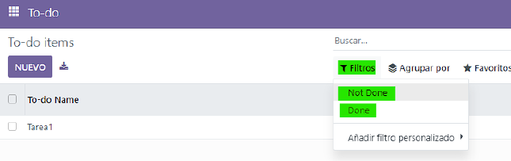
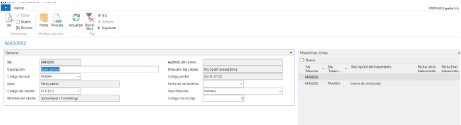
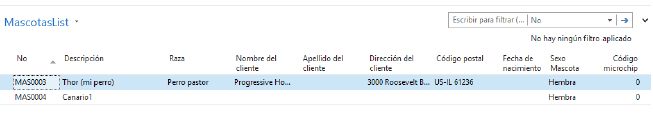

En este apartado escribiré sobre los proyectos en los que he trabajado de forma autodidacta.
Desgraciadamente he perdido muchos desarrollos, ya que he usado un hosting gratuito (hostinger y 000webhost)
y estos hosters han "archivado" mis webs siendo incapaz de recuperarlas.
Escribiré sobre desarrollos en varios lenguajes, adjuntando fotos de los desarrollos y fotos de las interfaces.
Además adjuntaré un PDF con mis apuntes sobre desarrollo realizados durante mis estudios de Desarrollo de Aplicaciones
Multiplataforma.
Proyecto final Desarrollo de Aplicaciones Multiplataforma. Alegoría
El proyecto final de esta FP (que he titulado "Alegoría") consistia en el desarrollo de un videojuego en el lenguaje C# y en el entorno UnitY.
Los objetivos de este proyecto eran varios:
Conseguir realizar un guardado de partida
Familiarizarme y practicar con el lenguaje C#
Realizar una aplicación multiplataforma completa y 100% usable
El primer objetivo es debido a que, durante el examen del módulo "Aplicaciones multiplataforma", tuve problemas
para realizar un guardado de datos en una aplicación sencilla. Eso provocó que la nota no fuera 10, por lo que no
pude quitarmelo de la cabeza hasta que conseguí entenderlo de forma teórica al 100% y poder realizarlo sin problema serializando
los datos de la apliación.
El proyecto es un videojuego que permita recoger distintos potenciadores, evitar enemigos y obtener la mejor puntuación antes de llegar
a la meta, contando este con varios niveles y con un ranking para competir con los amigos. Este ranking se debe poder exportar e importar
tanto de forma serializada como en JSON para poder obtener los datos.
Este proyecto también me permitió practicar mi capacidad de programar con C# ya que no es un lenguaje que haya estudiado en
la clase, es un lenguaje que aprendí por mi cuenta por lo que tuve algunos problemas durante el desarrollo del proyecto que me permitieron
conocer de forma más profunda las limitaciones y opciones de este lenguaje.
Comencé el desarrollo por dos bloques, primero quería conseguir una figura que se moviera, que al tener contacto con otra
realizara alguna acción (temblar la pantalla, cambiar de color, un sonido) y un mensaje. El segundo bloque era el visual y el menú, ya que
considero que ese es mi mayor punto débil, todas mis APPs son sencillamente feas, por lo que quería que fuera la primera de la que me sentía orgulloso.
Parte Jugable
Comencé con un triángulo que pudiera mover mediante las teclas "WASD" (teclas comúnmente usadas para mover personajes en videojuegos). A continuación cree
otra figura de forma cuadrada para que, al colisionar con esta, se produjera un evento. Aunque al principio me daba igual el evento, solo quería que
la colisión desencadenara algún evento, al final del juego esta colisión provoca tanto la bajada de puntuación del jugador como la bajada de vida.
Después cree otro objeto que desapareciera al ser tocado por el jugador (es decir, el triángulo), esta figura al final se convertirá en un potenciador
que provocaba tanto una suma de puntuación como la modificación del sistema de juego (invencibilidad del personaje, más velocidad, eliminación de enemigos).
El prototipo inicial finalizo tras crear otra figura que, al ser tocada por el jugador, finalizara el juego (es decir, cargara otra escena). Esta figura se convertirá
en la meta de cada nivel, que, al ser tocada por el jugador, traspasará los datos a la siguiente escena.
Parte Visual
Como este es mi punto flaco, me gustaría decir que conte con el consejo de Jose Antonio Villar para solucionar mis dudas y para tomar decisiones complicadas en cuanto al diseño.
Para comenzar pense en el tono del proyecto. La idea inicial era que fuera una especia de laberinto y una metáfora sobre lo que pueden
ser los pensamientos intrusivos que te pueden provocar la ansiedad o depresión, por lo que tenía claro que tenia que ser un juego con tonos oscuros. Al final me decidí por tonos de morado u negro
como color del proyecto.
Como uno de mis hobbies es el bordado, pense en realizar los sprites en punto de cruz y luego exportarlos e insertarlos en Unity, pero, tras realizar el primer sprite en punto de cruz, me di cuenta
que el tiempo no era suficiente como para poder realizar el resto de sprites.
Aunque el diseño del menú comenzaron siendo unos simples botones fue evolucionando hasta convertirse en un menú interactivo con un
video en bluque de fondo para darle sensación de dinamismo.
Presentación final
Como parte del proyecto debemos realizar una presentación que adjunto a continuación, donde se puede
observar el resultado final del proyecto.
Proyecto final Desarrollo de Aplicaciones Web. Kettei
Este proyecto consiste en un juego web basado en toma de decisiones para gestionar un país. La web
nos irá indicando situaciones donde el usuario debe elegir las distintas posibilidades. El nombre
del proyecto es debido a que "Kettei" en japonés significa "decisión" o "determinación. Desgraciadamente es uno de los proyectos que he perdido.
La web requiere un inicio de sesión donde el usuario debe registrarse. Este inicio de sesión permite guardar
el progreso de casa usuario, las partidas perdidas o ganadas y las decisiones tomadas, estos valores eran guardados en una
base de datos y cada vez que el usuario modificaba un valor se realizaba una modificación en la base de datos.
Al tomar una decisión uno
de los tres valores (llamado poderes en el juego) aumentará o disminuirá, y si alguno sobrepasa un determinado valor (100)
o dismuniye por debajo de 0, el usuario perderá. Para reflejarlo de forma visual he creado 3 barras mediante CSS
que aumenton o disminuyen en función del valor base del poder en cuestión.
Proyecto Posts
El objetivo de este proyecto era entender la lógica detras de las redes sociales como Twitter o Threads, para ello comencé
creando una página simple de inicio de sesión y medificación de usuario. A continuación cree los campos necesarios en la base de datos
para que los usuarios puedan crear, eliminar o modificar sus datos a traves de PHP y realizando las consultas en SQL.
Para continuar, estudie la insercción de campos BLOB en la base de datos para poder implementar las imágenes de perfil
y la capacidad de insertarlas en los posts publicados.
Finalmente decidí que fuera una red social más "personal" por lo que existe un identificar único de cada usuario que permite
seguir y observar los posts de ese usuario, por lo que podemos elegir y buscar a nuestros amigos de forma que solo tengamos que ver
los posts de las personas que queremos.
Para comprobar su funcionamiento use a mis conocidos de testers y, como podemos ver en la imagen, salieron a relucir errores
como la longitud del texto. Estos errores se solucionaron mediante un salto de linea y relacionar la altura del cuadro del post
con el número de caracteres. Desgraciadamente es otra de las apliaciones que he perdido debido a la eliminación de mis webs.
Desarrollo multiplataforma
En este módulo nos centramos en las distintas plataformas posibles para desarrollo, comenzamos el año creando aplicaciones android
en el lenguaje JAVA. En esta parte del desarrollo decidí crear una aplicación que permita llevar los datos
de los distintos libros leidos, ya que es uno de mis hobbies y siempre he pensado que todas las Apps que existen
para llevar el control de los libros leidos son innecesariamente complejas. El objetivo de esta App era crear
una aplicaciones que sencillamente pudiera guardar el título del libro, el autor y si ya se ha leido o no.
Cuando finalizamos la parte de desarrollo en Android pasamos a programar en Unity. Mi objetivo durante
esta parte del curso fue hacer un juego de plataformas donde el usuario debiera coger X objetos o saltar X plataformas que tras
unos segundos desaparecerá antes de poder llegar a la meta y,
una vez llegado, que la puntuación depende del tiempo que ha tardado. La mayor dificultad fue la de acomodar las físicas de salto y gravedad
a mi gusto ya que sentía que una gravedad "lineal" no tenía mucho sentido, por lo que tuve que buscar la forma de una gravedad
"exponencial", que cada vez que el usuario saltara desacelerara. Sirvió como práctica para lo que sería el proyecto de fin de ciclo.
Acceso a Datos
Este proyecto forma parte del módulo de Acceso a Datos. Se ha programado mediante C# y el entorno de desarrollo Visual Studio 210 y 2022
Este módulo consiste en aprender y utilizar las distintas formas de acceder
a datos externos e interpretar y exportar datos internos además del control de errores que pueden ocurrir mientras realizamos este tipo de
tratamientos. El programa consiste en introducir datos de ciudades e indicar la población y si es capital. Al ser un trabajo de clase está
extensamente explicado en el siguiente video.
Este módulo es uno de los que más he practicado ya que, a parte de la complicación del control de errores, pienso que
su utilidad en cualquier ámbito (como tiendas locales, gestiones, transporte, etc) puede ser extensa y muy útil para los usuarios.
Cualquier trabajador agradece funcionalidades como la capacidad de exportar datos en distintos formatos o importar datos obtenidos
desde distintas fuentes. Adjuntaré capturas de alguno de los programas a continuación.
Diseño y desarrollo de interfaces
En este módulo estudiamos sobre el proceso de desarrollar interfaces que sean "user friendly". Para ello primero creamos interfaces en java, creando
diferentes tipos de menú que afecte a determinados contenidos como imágenes, textos u variables. La siguiente imagen es la práctica sobre
las distintas posibilidades de una men´ú programado en JAVA mediante la clase JFrame, JMenu, JLabel y demás.
Después pasamos al entorno Visual Studio 2019 y el lenguaje C#. En este tipo de programas
practiqué todo tipo de eventos y consecuencias, creando distintos tipos de interfaces, tanto por
deber siendo deberes como por gusto (de hecho, mientras buscaba piso, decidí hacer un programa
en este entorno y junto con Acceso a Datos para ir guardando los pisos encontrados y los datos de estos,
ya que estudiamos y conectamos los programas a bases de datos Access).
Algunos de estos programas son los siguientes.
Sistemas de gestión empresarial
Sistemas de gestión empresarial es un módulo que se centra en el uso de ERPs y el desarrollo en estos.
En concreto desarrollamos en "Odoo" varios tipos de aplicaciones, como por ejemplo, una lista de tareas
(llamada To-do) que nos permite añadir tareas, filtrarlas y borrarlas. En la siguiente imagen podemos ver
una este módulo filtrando por tareas hechas o no hechas.

Después de estudiar este sistema de gestión estudiamos "Microsoft Dynamics 365 Business Central". Creamos
una aplicación que nos permita gestionar (insertar, modificar, o eliminar) mascotas con determinados datos y
se nos mostrara en una parte del sistema de gestión mediante una lista.


Programación de servicios y procesos
Este módulo se centra en la programación y el entrenamiento de la lógica, entrelazando procesos y servicios
online para poder realizar distintos objetivos, por lo que no puedo sacar capturas de la interfaz, ya que
todo la programación se realiza el código JAVA y se introducen los datos y muestran los mensajes mediante la consola de
comandos, por lo que no existen capturas (aunque si que tengo el código).
Explicaré alguno de los programas realizados. Un ejemplo es el desarrollo de "semáforos", estos recursos
permiten utilizar recursos compartidos y acceder a ellos mediante un buffer. Esto se realiza mediante la implementación
de la clase "Buffer" en java, además del uso de la clase "Semaphore" para utilizar los semáfotos donde deseemos.
La mayoría de ejercicios relacionados con este tema se centran en el problema de "Productor-consumidor", donde
existe una clase que produce un recurso (un objeto con determinados atributos) y una clase que los consume, como por ejemplo
un supermercado con proveedores y clientes o un local de comida con cocineros y clientes. A continuación usamos monitores para seguir practicando.
Los monitores son un mecanismo de sincronización de nivel más alto que los semáforos y se encarga de la sincronización directamente
el programa ejecutor.Solo un hilo o proceso puede estar ejecutándose dentro del monitor, bloqueándose el siguiente hasta que se desocupe.
Otro tipo de programas realizados son los relacionados con conexiones en red y con el modelo "Cliente/Servidor". Para este tipo de ejercicios
primero debemos seleccionar el tipo de modelo que queremos (cuantas capas queremos) y que tipo de red. Primero programamos mediante
el uso de Sockets y el modelo TCP/IP. Mediante estos requisitos programamos un chat síncrono.
Apuntes
Todas las aplicaciones centradas en la F.P. cuentan con apuntes extensamente detallados
sobre todos y cada uno de los desarrollos, comenzando por el inicio más simple (como crear
un botón) hasta aplicaciones completas.